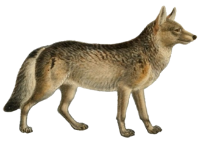
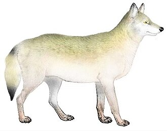
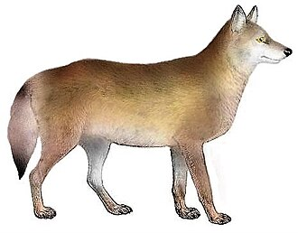

Federal protection begins

Timber wolf
1967

Rocky Mountain wolf
1973

Mexican wolf
1976

Texas wolf
1976
1978
Gray wolf
Endangered throughout the lower 48, except Minnesota
Minnesota: Threatened
Wolves were initially listed separately under federal endangered species protections.
With passage of the Endangered Species Act, these separate protections were eventually reorganized into a broader gray wolf listing.